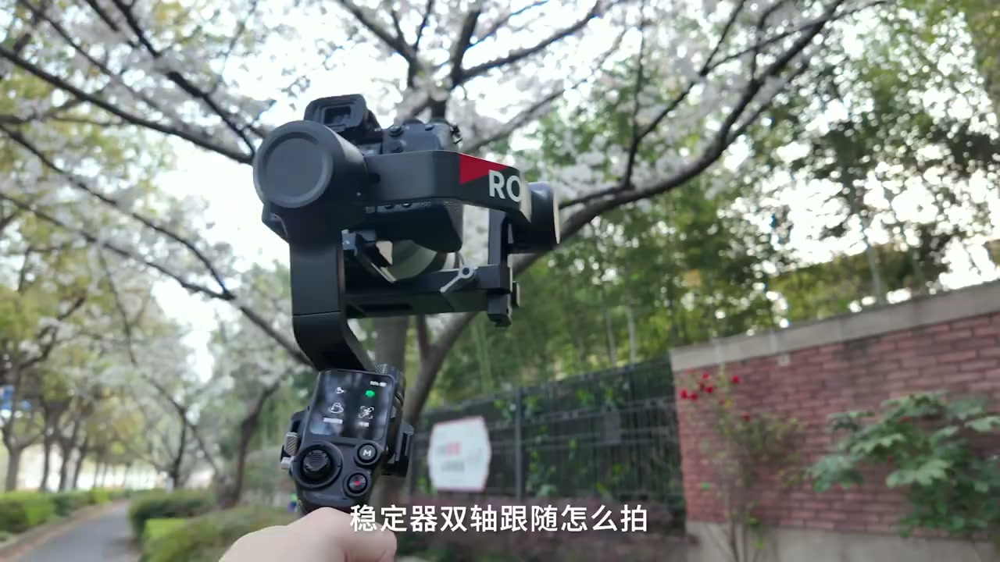
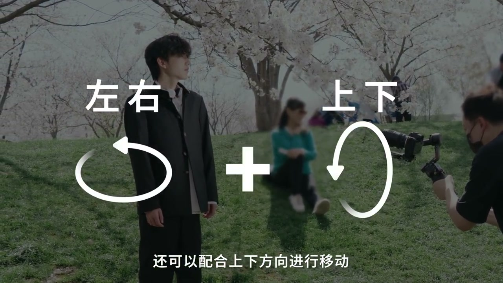

内容要点
这段视频围绕「不会摇镜头？新手稳定器必学模式📹」展开，按时间介绍其中的关键环节。双轴跟随怎么拍 记住对角线原则。
开场引入
双轴跟随怎么拍 记住对角线原则。Hello 大家好 又是你们的睿脚。双轴跟随模式在平移跟随的基础上。加了上下的运动模式。简单的来说 就是稳定器不仅可以随着身体左右平移。还可以配合上下方向进行移动。一般使用双轴跟随模式都是由上到下。或者由下到上的摇镜头方式。最后带到天空或者建筑作为结尾

开场与主题引入
大家在运镜时提前想好画面的开头和结尾。比如我想从人物开始运镜。最后落伏在樱花和天空结束。确定好大致路线后。记住要往对角线方向运镜就OK了。在运镜过程中需要改变焦段。可以通过切换摇杆模式。配合跟焦电机直接用稳定器。快速的控制 镜头变焦

总结
大家在运镜时提前想好画面的开头和结尾。